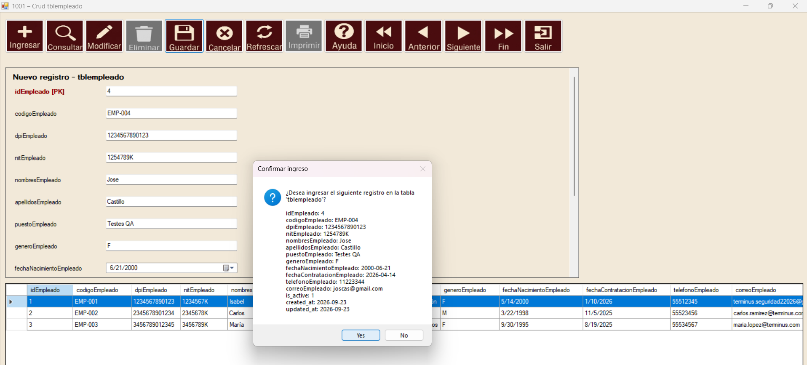

Dónde está la lógica del CRUD
Coordinación de operacionescodigo\componentes\navegador\Navegador\CapaVista_Navegador\Formularios\ClsCrudCoordinador.cs - Clase: CapaVista_Navegador.ClsCrudCoordinadorFormulario dinámico de camposcodigo\componentes\navegador\Navegador\CapaVista_Navegador\Componente\ClsCrudFormulario.cs - Clase: CapaVista_Navegador.ClsCrudFormularioCuadrículacodigo\componentes\navegador\Navegador\CapaVista_Navegador\Componente\ClsCrudGrid.cs - Clase: CapaVista_Navegador.ClsCrudGridConsultas SQL y transaccionescodigo\componentes\navegador\Navegador\CapaModelo_Navegador\Datos\ClsRegistros.cs y ClsTransaccion.cs
Consultar
- Pulse Consultar.
- El componente carga la tabla y abre el selector del componente Consultas.
- Seleccione un registro por su llave primaria. La cuadrícula se filtra a ese registro.
- Si cancela el selector, la cuadrícula permanece con los datos cargados.

Ingresar
- Pulse Ingresar.
- Complete los campos. Las llaves autoincrementales quedan bloqueadas; fechas, booleanos y llaves foráneas usan controles apropiados.
- Pulse Guardar y confirme.
- Corrija las validaciones indicadas. Al terminar, la cuadrícula se actualiza.



Modificar
- Cargue la cuadrícula con Consultar o Refrescar.
- Seleccione la fila.
- Pulse Modificar. Las llaves primarias quedan bloqueadas.
- Cambie los campos y pulse Guardar.

Eliminar
- Seleccione una fila visible.
- Pulse Eliminar.
- Revise la confirmación. La operación usa la llave primaria de la fila.
Una llave foránea puede impedir la eliminación si otras tablas todavía usan el registro. Revise primero los datos dependientes.
Cancelar y Salir
Cancelar cierra el panel de ingreso o modificación sin guardar. Salir contrae el área de datos y deja visible la barra; no cierra el formulario principal.